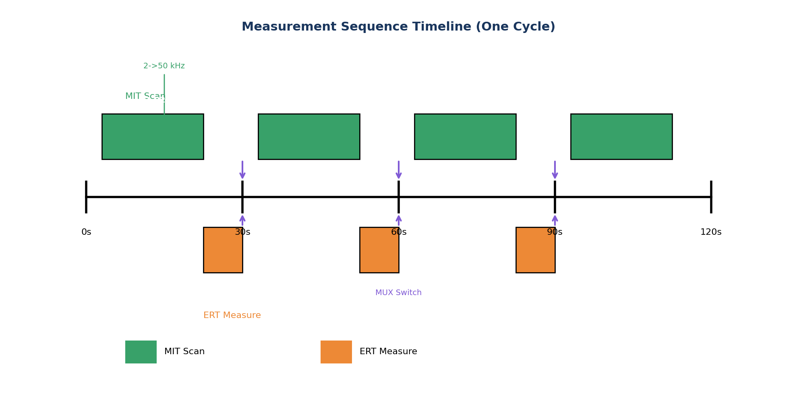

5 Deployment
5.1 Overview
This section provides comprehensive procedures for deploying and operating the HIRT (Hybrid Inductive-Resistivity Tomography) system in the field, from pre-deployment planning through data backup. The HIRT system combines Magnetic Induction Tomography (MIT) and Electrical Resistivity Tomography (ERT) measurements using a modular array of subsurface probes to achieve high-resolution imaging of buried targets.
5.2 Pre-Deployment Planning
5.2.1 Site Assessment (Day Before)
Thorough preparation is critical to successful field operations. Before deployment, conduct a comprehensive site assessment covering the following aspects:
- Review site conditions: Evaluate soil type and moisture levels, identify presence of utilities or obstructions, and establish access routes and staging areas.
- Check equipment: Verify all probes are tested and calibrated, ensure base hub battery is charged (>80%), verify cable continuity, and confirm data logger/tablet is configured.
- Verify permits and permissions: Confirm site access authorization, excavation permits (if required), and archaeological survey approval.
5.2.2 Equipment Checklist
| Category | Item | Quantity | Notes |
|---|---|---|---|
| Essential | Probes (tested) | 20-24 | Full functional test |
| Essential | Base hub/control unit | 1 | Battery >80% |
| Essential | Connection cables | 3-5 m each | Verified continuity |
| Essential | Fiberglass survey stakes | As needed | For marking |
| Essential | Measuring tape | 30 m min | Metric markings |
| Essential | Field tablet/laptop | 1 | Configured with software |
| Essential | Tool kit | 1 | Wrenches, screwdrivers, multimeter |
| Optional | GPS unit | 1 | Sub-meter accuracy preferred |
| Optional | Weather station | 1 | Temperature, humidity |
| Optional | Backup battery | 1 | 12V compatible |
5.3 Site Assessment and Grid Design
Grid design is fundamental to survey success. The grid geometry determines spatial resolution, depth sensitivity, and survey efficiency. Standard configurations are provided below, with adjustments based on site-specific requirements.
| Configuration | Grid Size | Spacing | Probes | Application |
|---|---|---|---|---|
| Standard | 10 x 10 m | 2.0 m | 20-24 | General surveys |
| Small | 8 x 8 m | 1.5 m | 12-16 | Woodland/confined areas |
| Large | 15 x 15 m | 2.5 m | 30-36 | Crater sites, open areas |
| High Resolution | 6 x 6 m | 1.0 m | 36 | Detailed anomaly mapping |
5.3.1 Grid Setup Steps
- Establish baseline: Set reference point (0,0) with survey stake, align baseline with site grid (N-S or as specified), and mark corners with bright flags.
- Mark probe positions: Measure spacing intervals along baseline, extend perpendicular rows, and mark each position with small stake or flag.
- Verify geometry: Cross-measure diagonals (should match within 5 cm) and record any deviations in field notes.
5.4 Probe Installation
Proper probe installation is critical for obtaining quality data. Insertion depth and technique vary with soil conditions and target depth requirements.
| Scenario | Target Depth | Insertion Depth | Notes |
|---|---|---|---|
| Woodland survey | 1-2 m | 1.5 m | Standard for shallow targets |
| Crater survey | 2-4 m | 3.0 m | Extended depth for crater fill |
| Reconnaissance | 0.5-1 m | 1.0 m | Rapid screening mode |


5.4.1 Insertion Methods by Soil Type
5.4.1.1 Sandy/Loose Soil
- May push probe directly without pilot hole
- Use water jet if available for deeper insertion
- Watch for collapse of hole walls during insertion
5.4.1.2 Clay/Compact Soil
- Pre-drill pilot hole using 18 mm hand auger
- May need to enlarge hole slightly for probe diameter
- Allow settling time (5-10 min) before measurement
5.4.1.3 Rocky/Mixed Soil
- Use auger with care to avoid damage
- Note rock contact locations in field log
- May need to relocate probe position slightly
Cable Routing Guidelines
- Route cables radially from base hub placed at grid center or edge
- Route cables along grid lines to avoid tangling
- Use cable clips or ties to secure at 1 m intervals
- Leave 0.5 m slack at each probe connection for strain relief
5.4.2 Cable Length and Signal Integrity
The HIRT system uses passive probes with all active electronics in the central hub. This architecture offers cost and reliability advantages but requires attention to cable length effects on MIT receive signals, which operate in the microvolt range.
The Signal Integrity Challenge: MIT RX coils produce signals of approximately 1 µV at the probe. These signals must travel through the probe cable (3-5 m) and trunk cable (variable length to hub) before reaching the preamplifier. Cable capacitance creates a low-pass filter effect, and longer cables increase susceptibility to electromagnetic interference (EMI) pickup.
| Trunk Cable Length | Signal Degradation | EMI Susceptibility | Recommendation |
|---|---|---|---|
| <5 m | <10% | Low | Passive probes OK |
| 5-10 m | 10-25% | Moderate | Passive probes OK with shielding |
| 10-15 m | 25-40% | High | Consider active probe option |
| >15 m | >40% | Very High | Active probes recommended |
Cable Capacitance Effect: Typical shielded cable has capacitance of approximately 100 pF/m. A 20 m cable run creates ~2 nF capacitive load. At 20 kHz operating frequency, this represents an impedance of ~4 k-ohm—significant for microvolt-level signals driving typical coil source impedances.
Practical Guidelines:
- Standard deployments (10 m total cable run): Passive probes provide adequate SNR with no additional measures beyond standard shielded cable
- Extended deployments (10-15 m): Use low-capacitance cable, minimize parallel cable runs, ensure single-point shield grounding
- Large-area surveys (>15 m): Consider the optional active probe configuration (adds $50-80/probe) which places a unity-gain buffer at the probe, driving the cable with a low-impedance source
Field Tip: Testing Cable Length Impact
Before committing to a large deployment, verify acceptable SNR at your planned cable lengths. Set up a single probe at the maximum expected distance from the hub and measure noise floor with TX disabled. If the noise exceeds 500 nV RMS, consider active probes or repositioning the hub closer to the probe array.
5.5 Cable Management and Field Logistics
Managing cable harnesses for 16-24 probes in field conditions represents one of the most underestimated challenges of multi-probe geophysical surveys. Poor cable management leads to tangling, connection errors, tripping hazards, and wasted time during deployment and recovery. The following systematic approach transforms cable logistics from a frustration into a repeatable, efficient procedure.
5.5.1 The Cable Challenge
A standard 20-probe HIRT deployment involves 20 individual 3-5 meter cables, creating 60-100 meters of total cable length that must be routed, connected, and managed across uneven terrain. In wet or muddy conditions, cables become heavy and prone to picking up debris. Without a systematic approach, deployment can devolve into “cable spaghetti” where identifying connections becomes guesswork and extraction takes twice as long as installation.
The key principle is that systematic deployment prevents chaotic recovery. Investing 10 minutes in organized cable routing saves 30 minutes during extraction and dramatically reduces connection errors.
5.5.2 Labeling System
Implement a dual-coded labeling system that provides both visual (color) and alphanumeric (label) identification:
Color Coding by Zone: Divide the probe array into 4-6 zones based on spatial grouping (e.g., North, South, East, West for square grids). Assign each zone a color using colored heat-shrink tubing or tape applied near both cable ends. This allows rapid visual identification from a distance and helps operators route bundles correctly.
Common zone color schemes: - North (blue), South (red), East (green), West (yellow) - Quadrants: Q1 (blue), Q2 (green), Q3 (yellow), Q4 (red) - Sequential zones: Z1 (blue), Z2 (green), Z3 (orange), Z4 (purple)
Numbered Labels: Apply waterproof numbered labels (printed on heat-shrink tubing or laminated paper) at both ends of each cable. Use probe numbering that matches your grid layout (e.g., P01, P02, … P20). Verify that labels remain legible after exposure to mud, rain, and handling.
Field Tip: Label Durability
Print labels on waterproof laser-printable heat-shrink tubing (e.g., 3:1 ratio polyolefin) and apply with a heat gun. This creates permanent, abrasion-resistant labels that survive multiple field deployments. Alternatively, laminate paper labels and secure with clear heat-shrink as an outer layer.
5.5.3 Deployment Sequence
Deploy probes and cables in a systematic order rather than randomly inserting probes wherever convenient. Two effective patterns are:
Spoke Pattern (Radial Deployment): Place the base hub at grid center or edge. Deploy probes moving outward from hub in radial spokes, laying cables as you go. This naturally organizes cables by direction and minimizes crossing.
- Start with probes nearest the hub
- Work outward along each cardinal direction (N, S, E, W)
- Fill in intermediate positions between spokes
- Each cable follows a direct radial path to hub
Sequential Row/Column Deployment: For rectangular grids, deploy row-by-row or column-by-column. This works well when the hub is positioned along one edge.
- Deploy entire first row/column with cable bundle
- Move to next parallel row/column
- Keep cable bundles parallel and organized by row
- Hub receives all cables from one side
Regardless of pattern, the key is consistency. The same deployment sequence should be followed for extraction, simplifying identification and reducing the chance of leaving equipment behind.
5.5.4 Cable Routing and Management
Slack Management: Keep excess cable coiled at the probe end, not at the hub. This prevents a tangled mass at the central connection point and makes individual probe adjustments easier. Use 2-3 loose coils secured with a single velcro tie at each probe location.
Elevated Routing in Wet Conditions: In muddy or waterlogged sites, elevate cables above ground level using survey stakes or improvised supports. This prevents cables from sinking into mud, reduces debris pickup, and makes extraction far cleaner. Position stakes at 2-3 meter intervals and secure cables with velcro ties or clips.
Avoid Crossing Cables: Design your routing pattern to minimize cable crossings. Where crossings are unavoidable, mark the intersection with a small flag or bright tie so operators know to untangle in reverse order during extraction.
Bundle Parallel Runs: When multiple cables follow the same path (common in spoke patterns), bundle them together with velcro ties every 2 meters. This prevents individual cables from wandering and reduces tangling. Do not use zip ties (difficult to remove for adjustment) or excessive tension (damages insulation).
5.5.5 Connection Protocol
Follow a systematic connection sequence to reduce errors and enable quick troubleshooting:
Dry-fit First: Before inserting probes, lay out all cables and verify labeling is correct. Match probe numbers to grid positions on paper.
Verify Continuity: Before burial or full insertion, use a multimeter to quick-check resistance across cable ends (should read low ohms for good connections, open circuit for breaks).
Connect in Order: Plug cables into the base hub in sequential order (P01, P02, P03…). This makes troubleshooting far easier than random connection order. Mark each port on the hub with corresponding probe numbers.
Quick Resistance Check: After all connections are made, run a rapid resistance check across all probe pairs. This catches connector issues before beginning lengthy measurement sequences.
Field Tip: Connection Error Prevention
Take a photo of the fully connected base hub showing all cable labels plugged into their ports. If a cable becomes dislodged during the survey, this photo provides instant verification of correct reconnection without consulting field notes.
5.5.6 Teardown and Recovery Procedure
Systematic teardown in reverse order of deployment prevents cable tangling and ensures no equipment is left behind:
Disconnect in Reverse Order: Unplug cables from hub in reverse sequence (P20, P19, P18…). Coil each cable immediately upon disconnection before moving to the next.
Over-Under Coiling Method: Use the over-under coiling technique to prevent cable twisting. Alternate hand orientation with each loop: one loop with palm up, next loop with palm down. This creates a flat coil that unrolls without kinking.
Inspect During Coiling: As each cable is coiled, visually inspect for damage: nicks in insulation, bent connector pins, strained strain relief. Mark damaged cables for immediate repair before next deployment.
Extract Probes Last: Remove cables first, then extract probes. This prevents accidentally pulling on connected cables during probe extraction, which can damage connectors or pull cables into mud.
Clean Before Storage: Wipe cables clean with a damp cloth while coiling. Removing mud and debris in the field is far easier than cleaning dried, caked-on soil in the lab.
5.5.7 Storage and Transport
Proper storage prevents connector damage, cable tangling, and corrosion between field sessions:
Individual Cable Bags or Spools: Store each cable in a separate bag (ziplock or mesh) or on a small spool. Label the bag/spool with the cable number. This prevents tangling during transport and makes setup at the next site faster.
Dry Storage: Never store cables while wet or damp. Moisture trapped in connector housings promotes corrosion of pins and sockets. If cables get wet in the field, hang them to dry before coiling for storage.
Connector Protection: Use dust caps on all connectors during storage. For DIY systems, 3D-printed caps or simple plastic bags secured with rubber bands prevent dirt intrusion and pin damage.
Transport Organization: Use a dedicated cable bag, bin, or foam-lined case with compartments. Organize cables by zone (matching field deployment zones) so setup at the next site follows a familiar pattern.
Field Tip: Pre-Deployment Prep
Before leaving for a survey, lay out all cables in deployment order at the lab. This verifies you have the correct number, labels are legible, and connectors are clean. Taking 15 minutes for this check prevents discovering missing or damaged cables after probes are already in the ground.
5.5.8 Quick Reference: Cable Management Checklist
Pre-Deployment: - [ ] All cables labeled with zone color and probe number - [ ] Labels legible and waterproof - [ ] Connectors inspected and clean - [ ] Correct count verified (match number of probes)
Deployment: - [ ] Systematic deployment pattern chosen (spoke or sequential) - [ ] Slack coiled at probe end, not hub - [ ] Cables elevated in wet conditions - [ ] Parallel runs bundled with velcro ties - [ ] Connections verified before measurement
Recovery: - [ ] Disconnect in reverse order - [ ] Over-under coiling method used - [ ] Visual inspection during coiling - [ ] Cables cleaned before storage - [ ] All cables accounted for (count matches deployment)
Storage: - [ ] Individual bags or spools - [ ] Connectors protected with caps - [ ] Dry storage environment - [ ] Organized by zone for next deployment
5.6 Handling Field Obstructions
Real-world field conditions rarely permit idealized grid placement. Tree roots, rocks, standing water, and buried utilities require adaptive deployment strategies. The key principle is that inversion algorithms use actual sensor positions—accurate documentation of where probes are matters more than achieving perfect grid geometry.
5.6.1 When to Relocate vs Skip
| Situation | Recommended Action | Notes |
|---|---|---|
| Small root/rock at surface | Offset probe 10-30 cm | Record actual position |
| Large obstruction (tree, boulder) | Skip position entirely | Document in survey notes |
| Standing water/soft ground | Relocate to firm ground | May need wider offset |
| Buried utility (confirmed) | Skip with 1 m clearance | Safety priority |
| Partial insertion possible | Insert to achievable depth | Record actual depth |
5.6.2 Partial Depth Insertion
When a probe cannot reach full target depth due to subsurface obstructions (rock, dense clay, buried debris), partial insertion remains valuable:
- Record the actual tip depth in survey geometry file (see Section 25.6)
- Note the obstruction type in field log (rock, clay, unknown)
- Sensors above the obstruction remain valid for measurements
- Exclude sensors below tip depth during inversion processing
- Consider progressive deployment: Start shallow (1 m), assess data, then extend depths in clear areas
Partial Probes Are Still Useful
A probe reaching only 2 m instead of 3 m still provides valid measurements for the upper sensors. The inversion mesh simply excludes electrode positions below the actual tip depth. This is far better than no probe at all.
5.6.3 Position Measurement Procedures
Accurate position recording enables proper inversion geometry. Three levels of precision are available depending on site requirements:
5.6.3.1 Level 1: Tape Measure (Standard)
For most surveys, tape measure positioning relative to grid origin provides adequate precision:
- Establish grid origin at a marked reference point (survey stake, corner post)
- Measure X offset along the primary baseline direction
- Measure Y offset perpendicular to baseline
- Record to nearest 5 cm (sufficient for ~2 m probe spacing)
- Note direction convention (e.g., X = East, Y = North)
5.6.3.2 Level 2: Total Station (High Precision)
For surveys requiring cm-level accuracy or complex topography:
- Set up total station with backsight to known point
- Record each probe position as Easting, Northing, Elevation
- Export coordinates to survey geometry file
- Include surface elevation for topographic correction
5.6.3.3 Level 3: RTK-GPS (Absolute Coordinates)
For integration with GIS or multi-day surveys:
- Establish RTK base station or connect to CORS network
- Record WGS84 coordinates for each probe position
- Include surface elevation (Z_surface)
- Transform to local grid if needed for inversion software
5.6.4 Surface Elevation Recording
When ground surface varies across the survey area (slopes, undulating terrain, crater edges), record surface elevation at each probe position:
| Surface Variation | Action Required | Impact on Inversion |
|---|---|---|
| < 20 cm across grid | Record as flat (Z=0) | Negligible |
| 20-50 cm variation | Relative elevations | Minor mesh adjustment |
| > 50 cm variation | Full topographic survey | Required for accuracy |
For significant topography, record:
- z_surface_m: Ground surface elevation relative to lowest point (or absolute)
- z_tip_m: Probe tip depth below local surface (always negative)
- The absolute tip position is then: z_surface_m + z_tip_m
5.6.5 Photograph Documentation
Supplement numerical records with photographs showing:
- Overview of deployed grid with numbered markers visible
- Close-up of any offset or skipped positions with obstruction
- Reference scale in frame (survey stake with depth markings)
- GPS screenshot if using handheld unit
5.7 System Setup and Power-Up
After probe installation, systematic setup and verification ensures reliable data acquisition. Follow the power-up sequence carefully to avoid equipment damage and verify all connections before beginning measurements.
5.7.1 Power-Up Sequence
- Connect all cables: Verify each probe is connected to the base hub, check cable routing for kinks or tension points.
- Power on base hub: Turn main power switch ON, wait for initialization (10-15 seconds), and verify power LED is solid green.
- Verify probe communication: Run diagnostic scan, verify all probes report status, and note any non-responsive probes for troubleshooting.
- Initialize measurement system: Start field software, load site configuration, and verify probe array geometry matches field deployment.
5.8 MIT Measurement Protocol
Magnetic Induction Tomography measurements detect conductive anomalies through electromagnetic coupling. Each probe sequentially transmits while all others receive, building a complete response matrix at multiple frequencies.

5.8.1 Frequency Selection
| Frequency | Penetration | Primary Use |
|---|---|---|
| 2 kHz | Deep (3-4 m) | Deep target detection, high conductivity |
| 5 kHz | Medium-deep | General subsurface mapping |
| 10 kHz | Medium | Balanced depth/resolution |
| 20 kHz | Shallow-medium | Enhanced resolution |
| 50 kHz | Shallow (<1 m) | Near-surface detail, small targets |
5.8.2 Timing
- Full matrix measurement: all TX-RX pairs at single frequency (3-5 minutes)
- Multi-frequency sweep: complete matrix at all frequencies (30-45 minutes)
- Typical survey cycle: 10-15 minutes per complete scan at primary frequency
5.9 ERT Measurement Protocol
Electrical Resistivity Tomography measurements inject DC current across probe pairs while measuring voltage at all other electrodes. Multiple injection patterns provide complementary sensitivity for robust inversion.

5.9.1 ERT Configuration Parameters
| Parameter | Standard Value | Range | Notes |
|---|---|---|---|
| Current level | 1.0 mA | 0.5-2.0 mA | Adjust for noise floor |
| Integration time | 2 s | 1-5 s | Longer for noisy sites |
| Polarity reversal | Every 1 s | 0.5-2 s | Reduces electrode polarization |
| Stacking | 4 cycles | 2-8 | More for weak signals |
5.10 “Set Once, Measure Many” Workflow
The HIRT operational philosophy emphasizes thorough probe placement followed by comprehensive measurement. This approach maximizes data quality and enables redundancy checks while minimizing handling of deployed equipment.

5.10.1 Workflow Steps
- Install All Probes: Deploy complete array, mark with numbered flags, record GPS coordinates and insertion depths.
- Background Scan: Perform short MIT and ERT scan outside suspected zone to establish baseline/control measurements.
- MIT Sweep: Complete full TX-RX matrix at all frequencies before moving probes.
- ERT Patterns: Execute all injection patterns with multiple baselines for redundancy.
- Quality Control: Repeat 5-10% of TX-RX pairs, verify reciprocity (A-B approximately equals B-A), document any anomalies.
- Extract and Move: Carefully extract probes, shift to next section with one-column overlap for data continuity.
5.11 Quality Checks
Real-time quality assessment during data acquisition prevents costly re-surveys. Monitor the following indicators throughout the measurement process:
5.11.1 Good Data Indicators
- Consistent reciprocity: TX(A)-RX(B) matches TX(B)-RX(A) within 5%
- Smooth spatial variations without abrupt discontinuities
- Expected depth sensitivity decay with increasing offset
- Stable baseline measurements throughout survey
Problematic Data Indicators
- Poor reciprocity (>10% difference) - check coupling, recalibrate
- Noisy/spiky readings - check connections, improve shielding
- No depth sensitivity - verify spacing, adjust frequency
- Inconsistent repeats - check timebase synchronization, connector integrity
5.12 Deployment Scenarios
Different site conditions require adapted deployment strategies. The following scenarios illustrate common configurations optimized for specific survey objectives.

5.12.1 Minimal-Intrusion Variants
5.12.1.1 Rim-Only Deployment
- Place ring of probes around suspected feature edge
- Add select probes angled inward for cross-coverage
- Reduces ground disturbance in sensitive archaeological contexts
- Provides adequate coverage with proper geometric factor correction
5.12.1.2 Shallow Mode
- Insert probes to 1 m or less
- Use wider spacing (2-3 m) to compensate
- Rely on lower frequencies (2-5 kHz) for deeper field penetration
- Suitable for extremely sensitive sites or regulatory constraints
5.13 Time Estimates
| Activity | Duration | Team Size | Notes |
|---|---|---|---|
| Setup (probe insertion) | 30-60 min | 2-3 | Varies with soil |
| MIT sweep (all frequencies) | 30-45 min | 1 | Automated |
| ERT patterns | 15-30 min | 1 | Multiple configurations |
| QC checks | 10-15 min | 1 | Repeat measurements |
| Extraction | 15-30 min | 2-3 | Care required |
| Total per section | 2-3 hours | 2-3 | 10x10 m, 20 probes |
5.14 Shutdown and Data Backup
5.14.1 Safe Shutdown Procedure
- Complete final measurement: Take final data set and verify data is saved.
- Power down: Stop measurement software, power off base hub, disconnect cables from probes.
- Extract probes: Pull gently with straight vertical motion, do not twist excessively, note any stuck probes.
- Site restoration: Fill probe holes as required by permit, remove all markers and equipment, photograph final site condition.
5.14.2 Probe Extraction Tips
Stuck Probe Recovery
- Work probe back and forth gently with slow oscillation
- Add water around probe shaft to lubricate soil interface
- Use extraction handle tool if available
- Do not use excessive force - risk of probe damage
- For collapsed holes, allow water to soften soil before retry
5.14.3 Data Backup Procedure
- Download data: Connect tablet/laptop to base hub, download all raw data files, verify file sizes are non-zero.
- Backup to multiple locations: Copy to laptop hard drive, copy to USB drive, upload to cloud storage if connectivity available.
- Data organization: Use consistent naming (SITE_DATE_SCAN#.dat), create folder per site/day, include field notes file.
- Verify backups: Open files in viewer software, check data completeness, note any missing or corrupted files immediately.
5.15 Safety Reminders
Field Safety Checklist
- Always inform someone of your field location and expected return time
- Stay hydrated and take regular breaks, especially in hot conditions
- Be aware of wildlife, terrain hazards, and site-specific dangers
- Follow all site-specific safety rules and permit requirements
- Keep first aid kit accessible and know location of nearest medical facility
- For UXO sites: EOD clearance required, soft insertion tools only, 100 m exclusion zone
5.16 Equipment Maintenance and Storage
5.16.1 Post-Survey Cleaning
- Rods: Wipe down with damp cloth to remove soil and clay. Do not use solvents.
- Threads: Clean M12 threads with a soft brush (toothbrush). Grit in threads causes seizing.
- Connectors: Inspect for dirt. Use compressed air or contact cleaner if needed.
- Cables: Wipe clean while coiling. Check for nicks in insulation.
5.16.2 Storage
- Batteries: Store LiFePO4 batteries at 50-60% charge if unused for >1 month.
- O-Rings: Lightly grease O-rings with silicone grease to prevent drying.
- Coiling: Use ‘over-under’ coiling method to prevent cable twisting.
- Environment: Store in dry, cool location to prevent mold or thermal cycling damage.
For quick reference procedures, see Section 28.1. For troubleshooting guidance, see Section 10.1. For calibration procedures, see Section 16.1.